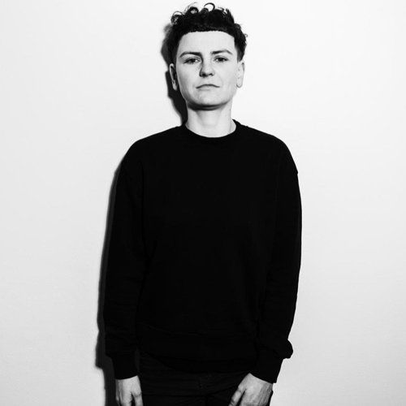

Prostředí kurzů mě krmilo šťastnými příběhy, realita tak růžová nebyla, říká testerka Lucie#
-  Adéla Pavlun
- 13.3.2024
Tři děti, ani číslo, které vyplňuje do kolonky „věk“, nezastavily sedmačtyřicetiletou Lucii Cicvárkovou od rekvalifikace do IT. I když jí okolí ne vždy věřilo, ona věděla, že pílí dokáže mnohé nedostatky dohnat. Aby ne, když k tomu přistupovala s klidem a z progamování se staly chvíle relaxu. Krize však přišla s koncem rodičovské, kdy došlo na lámání chleba. Lucie začala obrážet pohovory a snažila se poprat s technickými úkoly všeho druhu. „Hrnula jsem páté přes deváté,“ vzpomíná Lucie. Právě tehdy našla vznikající komunitu Junior Guru, která jí pomohla najít směr.
Pojďme si projít na úvod tvou pracovní historii. Vystudovala jsi chemii, což není zrovna lehký obor. Co tě k tomu vedlo?
K chemii mě přivedla náhoda. Chtěla jsem na přírodovědu, vystudovat geologii nebo botaniku. A tam se dělaly přijímačky i z chemie. Přihlášek se mohlo podávat libovolné množství a když už jsem měla tu chemii našprtanou, dala jsem si přihlášku i na chemickou fakultu. Přestože mě na přírodovědu vzali, nějak mi v tu chvíli připadalo pragmatické vystudovat chemii. Protože jak se uživím geologií? Dnes už vím, že o nic hůř než chemií.
Osmnáct let po škole ses rozhodla rekvalifikovat do IT. Co tě na IT lákalo?
IT, konkrétně programování, mě přitahovalo odjakživa. Dlouhé roky mi však ten obor připadal zapovězený. Obvyklý výskyt holek na fakultě informatiky byl tehdy, kolem roku 2000, tak jedna, dvě v ročníku. Navíc mi nijak zvlášť nešla matematika. Zkrátka netroufla jsem si ani pomyslet, že bych i já něco takového mohla dělat. Vždy jsem však kolem sebe měla spoustu kamarádů programátorů. Fascinovala mě ta magie, s jakou třeba nějakým narychlo napsaným skriptem dokázali prolomit šifru na šifrovací hře.
Co byl teda úplně první krok směrem k IT?
Co mi připadalo přístupné, byl web. První webovky jsem si seskládala v roce 2003, za podpory kamaráda a legendárního manuálu Jak psát web. Webové stránky se tehdy ještě dělaly jako HTML tabulky, žádné CSS, bylo to jednoduché. O pár let později jsem je přepracovala i do CSS. Byl to ale pořád jen takový punk.
A pak ses rozhodla pro nějaké systematické vzdělávání?
První systematický krok k IT jsem udělala v roce 2018 vstupem do kurzu od Czechitas. Impulsem bylo skokové zlepšení Google Translatoru. Živila jsem se tenkrát jako překladatelka technických textů a najednou jsem si všimla, jak výrazně se ten překladač zlepšil. Bylo jasné, že tohle odvětví překladatelství spěje ke konci a že se budu muset poohlédnout jinde. Tehdy se znovu vynořila myšlenka na programování.
Kde se v tobě najednou vzalo to odhodlání, že IT přeci jen může být i pro tebe?
K tomu jít si vyzkoušet programování v nějakém kurzu mě inspirovali lidé v okolí. Samouků, kteří pracovali v IT, aniž by to vystudovali, jsem znala několik. Kamarádka se jen tak pro zábavu učila základy programování v PyLadies. A od PyLadies byl už jen krůček k nalezení Czechitas. Zrovna v té době se oblast IT začala více otevírat ženám, a to mě hodně povzbudilo.
Rovnou jsi skočila do Javy a objektově orientovaného programování. Jak to tehdy na tebe působilo?
Koncept mi přišel srozumitelný, těžší bylo porovnat se s programovacím jazykem jako takovým. Dvousemestrální kurz Javy jsem tehdy vnímala jako hranici mých intelektových schopností. Po letech péče o děti a mentálně velmi pohodlné práci překladatelky přišel nářez, kdy se myšlení muselo rozjet na plné obrátky. Hrozně mě to bavilo a drtilo zároveň. Pochybnosti, jestli na to mám, se střídaly se stavy euforie, když mi věci sepnuly a povedlo se napsat funkční kus kódu. Až mozek pochopil princip, jak převádět zadání do kódu, tedy překládat z lidské řeči do programovacího jazyka, tak se to zlomilo. To ale nastalo mnohem později než v tomhle prvním kurzu.
Takže ses nenechala odradit a hledala jiné technologie, kde to zacvakne.
Java mi připadala poměrně komplikovaná přípravou prostředí. Chtěla jsem zkusit něco jednoduššího a weby byly jasná volba. Stará láska, známé pole, uchopitelný výsledek. To jsem ale netušila, kam se technologie posunuly a o čem je JavaScript. Ve finále se mi ale hodilo všechno, co jsem se naučila.
„Switch do IT jde udělat i po 40, se třemi dětmi, nevěřícím manželem a trojkou z matiky na gymplu,” sdílela jsi v klubu Junior Guru. Takže nezbývalo, než věřit si sama. Musela jsi mít asi hodně pevnou vůli a odhodlání, obzvlášť s dětmi. Jak jsi to zvládala a proč ti manžel moc nevěřil?
Myslím, že žil v takovém tom klasickém klišé, že programování rovná se matematika. A mé matematické limity zná. Také je náročný na výsledek, u sebe i druhých, a nedělá nic, pro co nemá výrazné předpoklady. Já jsem naopak nadšenec, vrhám se bez zvláštního talentu do čehokoli, co mě přitahuje a baví.
Aby to ale nevyznělo vůči rodině úplně negativně: Vždycky jsem měla podporu v tom, abych při mateřských povinnostech našla i čas pro své aktivity. Protože protivnou neodpočatou matku doma nikdo nechce. Jakým způsobem budu relaxovat, už byla moje věc. Zpočátku jsem se učila francouzsky a chodila cvičit, později to bylo programování.
Čím doháníš zmíněné limity?
Chybějící talent kompenzuju zvýšeným úsilím. Už víckrát jsem se přesvědčila, že tréninkem lze ledacos dohnat. A když jsem později od vystudovaných programátorů slyšela, že ani mezi nimi nejsou samí matematičtí géniové, začala jsem si víc věřit.
Rekvalifikace do IT není jednoduchá věc. Kdy nastal moment, že ses rozhodla zkusit se IT živit?
Napřed to byl opravdu jen koníček při péči o děti. Takže první dva roky jsem postupovala pomalu a práci nehledala. Spíš jsem zkoušela různé technologie a rozhlížela se, co by mi sedělo. Do nutnosti opravdu do IT přejít jsem se dostala v době covidu, kdy se velmi utlumily zakázky na překlady a po uvolnění lockdownu už se nevrátily na úroveň, aby se tím dalo živit. Navíc už mě to stejně nějakou dobu nebavilo, protože Google Translator, který jsem neváhala využívat, mě z překladatelky degradoval na korektorku. Vrhla jsem se tedy do hledání práce v IT. Cítila jsem se připravená, měla jsem za sebou několik kurzů, provozovala jsem funkční webovky a byla jsem namotivovaná spoustou šťastně končících příběhů, kterými mě prostředí kurzů celou tu dobu krmilo. Realita už tak růžová nebyla.
V čem se tvá očekávání a realita lišila?
Zpočátku to ještě vypadalo nadějně, v létě 2020 jsem dělala tři pohovory na kodérku a i když to nedopadlo, měla jsem pocit, že je to dosažitelné. Pak přišel druhý covidový lockdown, práce v IT sice přibylo, ale té seniornější. Nabídky na čisté kodéry v podstatě zmizely. Pochopila jsem, že to, co umím, nestačí, a začala se učit dál.
Můžeš uvést nějaké překážky, na které jsi cestou narazila?
Jak jsem chtěla rychle dohnat mezery ve vědomostech, přestala jsem být systematická. Jednak jsem si vzala další kurz, ke kterému mi ale chyběly potřebné znalosti, takže jsem v tom dost plavala. A při tom jsem hledala práci. Vstupovala jsem do výběrek, kde jsem se sice dostala pohodlně do technických kol, ale to generovalo technické úkoly. Každý byl zaměřený na něco jiného, já se to snažila vše splnit, takže jsem to hrnula páté přes deváté a často ani nedotáhla do konce, protože to přesahovalo mé tehdejší znalosti.
Měla jsi tehdy na koho se obrátit?
Neznala jsem jiné zdroje informací pro laiky než kurzy Czechitas, což bylo velmi omezující. Kurzy se vypisovaly jen jednou za čas a jen na nějakou oblast. I to byl jeden z důvodů toho informačního chaosu, ve kterém jsem se ocitla. K tomu jsem se dostala pod ekonomický tlak, protože překladatelské zakázky postupně skončily úplně. Celý rodinný rozpočet tak táhnul manžel a já nedokázala říct, jaký mám plán. Nevěděla jsem, co přesně musím udělat, co a kam se jít učit a jak dlouho to bude trvat. Byla to slušná krize, kdy reálně hrozilo, že to budu muset vzdát.
Co tě nakonec z krize vyvedlo, pomohlo najít a držet směr?
V téhle době největší beznaděje jsem objevila Junior Guru, což bylo zcela zásadní. Bez nadsázky říkám, že nebýt Junior Guru, tak v IT nepracuji. Discordové fórum bylo čerstvě založené, vstoupila jsem tam snad mezi první stovkou členů. Komunita mi pomohla se zorientovat. Ukázala mi další zdroje informací, zkušení lidé z oboru dokázali nastínit nějakou road mapu i její časovou náročnost. Potkávala jsem zde další začátečníky – juniory, kteří usilovali o totéž. Naráželi jsme na podobné překážky, sdíleli strasti z pohovorů, ale i finální úspěchy. Dostala jsem zde nespočet rad od seniorních programátorů, zhodnocení kódu i konzultací. Do toho jsem si mohla číst i debaty dalších členů, konzultace nad jejich problémy, které se často hodily i mně.
Kromě technických otázek se tu řeší i lidská stránka IT oboru: jak důležitá je firemní kultura a komunikace, jak poznat, co člověku sedne, co musí a nemusí přijmout, jak vyjednávat o pracovních podmínkách, jak nevyhořet při učení a později při práci. Komunita je podporující ve všech směrech. Můžete se sem třeba přijít vyplakat, když s vámi vymetou na pohovoru nebo jsou drsní v nové práci.
Měla jsi nějakého mentora/mentorku?
Ano, ještě před vstupem do Junior Guru. Jeden z mých kamarádů se mi na nějakou dobu stal neoficiálním mentorem. Vzniklo to spontánně, z pár náhodných dotazů vzešlo provázení mým prvním programátorským projektem, na jehož konci byla funkční appka. Kdyby se k získání první práce vázal nějaký ceremoniál, budu na něm vedle Czechitas a Junior Guru děkovat právě Mílovi.
Ceremoniál by byl v Oracle, kde děláš testerku. Vnímáš to jako ústupek od frontendu?
K práci testera vedla shoda několika okolností. Dlouho jsem se testování bránila, protože jej provází aura, že to je „odbočka od programování“. A já chtěla přece programovat frontend. S tím jsem taky vždy odbyla kamarádku z Java kurzu, která právě v Oracle našla práci jako Quality Assurance (QA) Engineer a nabízela mi, ať to zkusím taky.
Co se tedy stalo, že jsi změnila názor?
V klubu Junior Guru jsem si mohla vyzkoušet spolupráci na webovém projektu pro členku klubu, která rozjížděla živnost. Byla to zásadní zkušenost. Pracovat pro někoho jiného, a ještě skládat kód spolu s dalšími lidmi, se výrazně liší od toho skládat si web, kde jsem sama sobě zákazníkem i kodérem. Zjistila jsem, že piplačka s designem a zákaznické požadavky mohou dosáhnout úrovně, která mě víc štve než těší.
Abych si konečně vyzkoušela skutečnou práci v IT, vzala jsem brigádu jako manuální tester. Vstupní znalostní bariéra byla nulová, vše nás naučili za dvacet hodin. Náplní práce bylo proklikávání se aplikací podle předepsaného scénáře. Jako nakouknutí do IT firmy to bylo skvělé, všichni byli navíc moc milí a nápomocní. Jen ta práce mě nebavila. Chtěla jsem programovat a dělat rutinní úkony ručně bylo utrpení.
Takže v automatizovaném testování, které děláš teď, jsi našla kompromis?
Vůbec ne. Automatizované testování mě hned od začátku zaujalo. Udělala jsem si na něj intenzivní kurz, který byl v JavaScriptu. Tuto technologii jsem již v té době dotáhla na úroveň, že mi všechny lekce dávaly smysl a pohodlně jsem jim rozuměla. Vlastně takové soft programování, kdy nemusím vymýšlet architekturu, ale jen kóduji jednoduché kroky. Tak jsem zavolala kamarádce, že bych to na tu QA pozici zkusila.
Jak to šlo na pohovoru?
Byl to první pohovor, kde jsem se na technickém kole necítila nepatřičně. Bodovalo všechno, co jsem dosud v IT oblasti vyzkoušela. Že jsem reálně testovala i že vím něco o automatizaci. Že umím udělat vlastní projekt. Že mám základy JavaScriptu a Javy. Ano, hledali přesně tuhle kombinaci. A díky tomu, že jsem v předchozích měsících drtila úlohy na Hackerranku, jsem zvládla úkol tohoto typu i tady. Vlastně mě nenapadá nic, co bych během těch 2 let vyzkoušela a nakonec nevyužila. Vše do sebe krásně zapadlo.
Teď jsi v práci spokojená, ale přesto se nemůžu nezeptat, zda do budoucna zvažuješ ještě programování zkusit. Jak vidíš budoucnost?
Do vývoje asi časem směřovat budu. Na QA pozici se hodně naučím, je to dostatečně technicky náročné, alespoň u nás ve firmě. Ale ten pocit z toho „něco vytvořit” tu chybí. Taky očekávám, že s pracovní náplní obou směrů, jak QA tak i developera, hodně zamává AI. Uvidíme tak za rok, dva, jak budou práce programátorů a testerů vypadat.

Chceš se taky na něco zeptat?
Můžeš! Na našem klubovém Discordu je nejen Lucie Cicvárková, ale i 278 dalších lidí, které příběhy juniorů zajímají.